Unidad 10 • Geofísica de Medios Granulares
Thomas Gallot • Luis A. Pugnaloni (Universidad Nacional de La Pampa / CONICET)
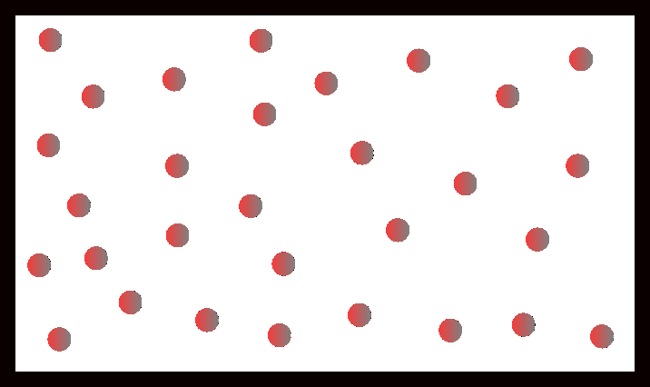
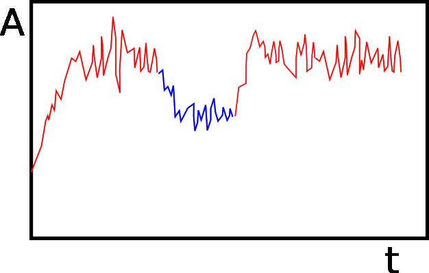
Durante el tiempo de observación \(T\), el sistema explora muchas configuraciones microscópicas:
Promedio en el ensamble:
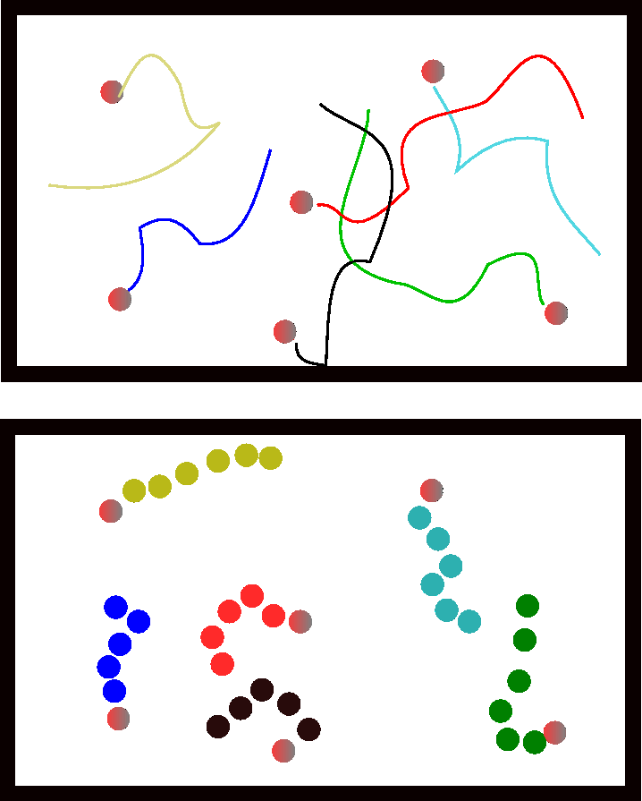
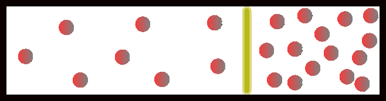
Sistema aislado en equilibrio con energía \(E\), volumen \(V\) y \(N\) partículas.
donde \(k_B\) es la constante de Boltzmann.
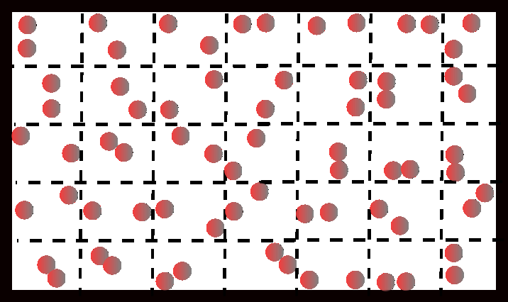
Sistema en contacto con un baño a temperatura \(T\). Imaginar \(\mathcal{N} \gg \Omega_\text{sist}\) sistemas que intercambian energía, aislados del universo.
Maximizando la entropía total con Stirling y multiplicadores de Lagrange (\(\sum_r \mathcal{N}_r = \mathcal{N}\), \(\sum_r \mathcal{N}_r E_r = \mathcal{N}E\)):
Edwards (1989): las configuraciones microscópicas estáticas de un granular sometido a perturbaciones repetidas pueden tratarse como un estado macroscópico de equilibrio. Usa el volumen \(W_r\) en lugar de la energía \(E_r\), y \(Q_r = 1\) si la configuración es mecánicamente estable.
| Sistema Térmico | Sistema Granular |
|---|---|
| \(E\) (energía) | \(V\) (volumen) |
| \(E_r\) | \(W_r\) |
| \(S\), \(k_B\) | \(S\), \(\lambda\) |
| \(P_r = \Omega(E)^{-1}\,\delta(E - E_r)\) | \(P_r = \Omega(V)^{-1}\,\delta(V - W_r)\) |
| \(T = \partial E / \partial S\) | \(\chi = \partial V / \partial S\) (compactividad) |
| \(F(N,V,T) = E - TS\) | \(Y(N,\chi) = V - \chi S\) |
| \(\sum_r \exp(-E_r / k_B T)\) | \(\sum_r Q_r \exp(-W_r / \lambda\chi)\) |
S.F. Edwards, R.B.S. Oakeshott, Physica A (1989).
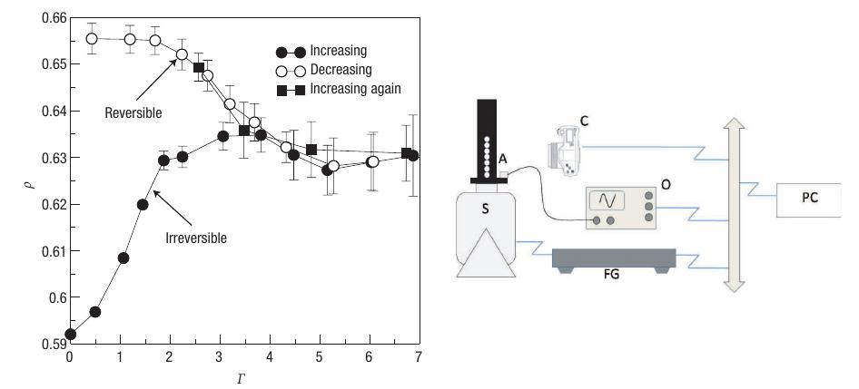
E.R. Nowak et al., Powder Technol. (1997); P. Richard et al., Nature Mater. (2005); M. Schröter et al., Phys. Rev. E (2005); Ph. Ribière et al., Eur. Phys. J. E (2007).
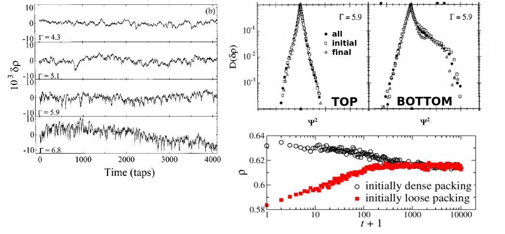
E.R. Nowak et al., Phys. Rev. E (1998); Ph. Ribière et al., Eur. Phys. J. E (2007).
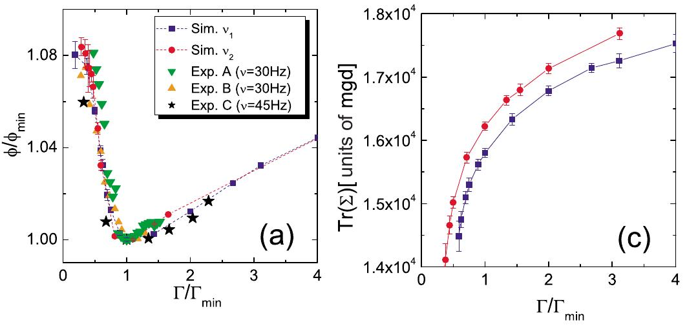
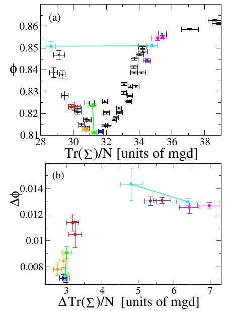
L.A. Pugnaloni et al., Phys. Rev. E (2010); Pap. Phys. (2011).
Microestado: configuración estática definida por \(\{r_i, f_{ij}\}\).
Conjetura de Edwards: \((V, \Sigma, N)\) define el macroestado «microcanónico». Si \(V = V_0\), \(\Sigma = \Sigma_0\), \(N = N_0\), todos los microestados son equiprobables.
\( S = \lambda \log \Omega \)
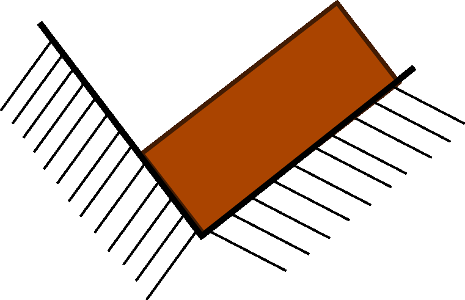
Ensamble canónico (\(V\) y \(\Sigma\) no fijos):
Multiplicadores: \(X\) (compactividad), \(\alpha\) (angoricidad)
\( F = -\lambda X \log Z \)
S.F. Edwards, R.B.S. Oakeshott, Physica A (1989); S.F. Edwards, Physica A (2005); R. Blumenfeld et al., Phys. Rev. Lett. (2012).
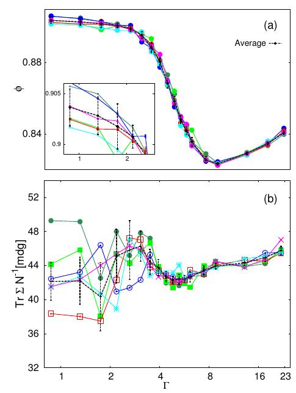
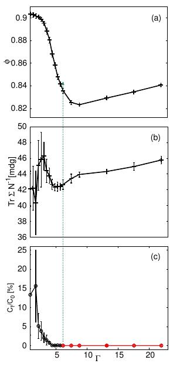
A. Gago, D. Maza, L.A. Pugnaloni, Pap. Phys. (2016); F. Paillusson, D. Frankel, Phys. Rev. Lett. (2012).
\(0 < \theta = M/N < 1/2\), \(\theta = \theta(V)\)
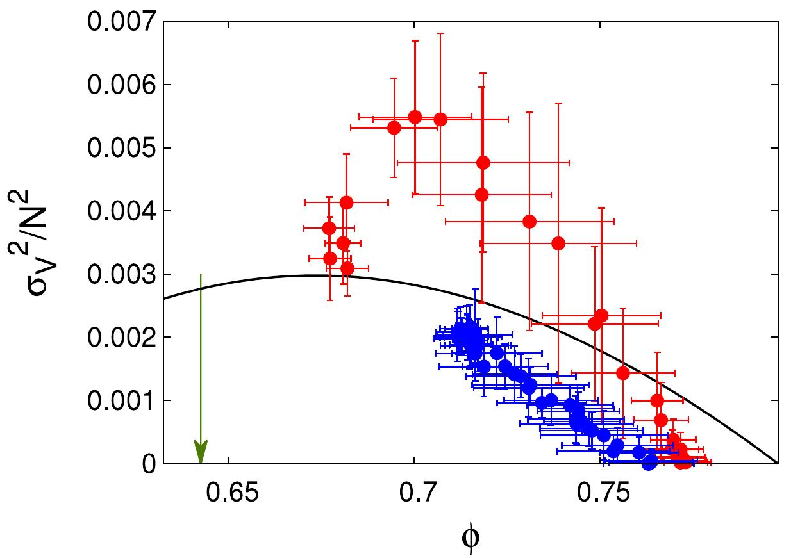
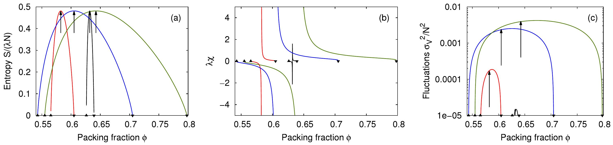
S.S. Ashwin, R.K. Bowles, Phys. Rev. Lett. (2009); R. Irastorza, C.M. Carlevaro, L.A. Pugnaloni, J. Stat. Mech. (2013).
Si sobre \(N\) contactos distribuimos fuerzas \(f_i\), el número de combinaciones posibles es:
donde \(N_i\) = número de contactos con fuerza \(f_i\). Debe cumplirse \(N = \sum_i N_i\) y \(F = \sum_i f_i N_i\).
Definiendo \(S = \ln W\), usando Stirling y maximizando con multiplicadores de Lagrange:
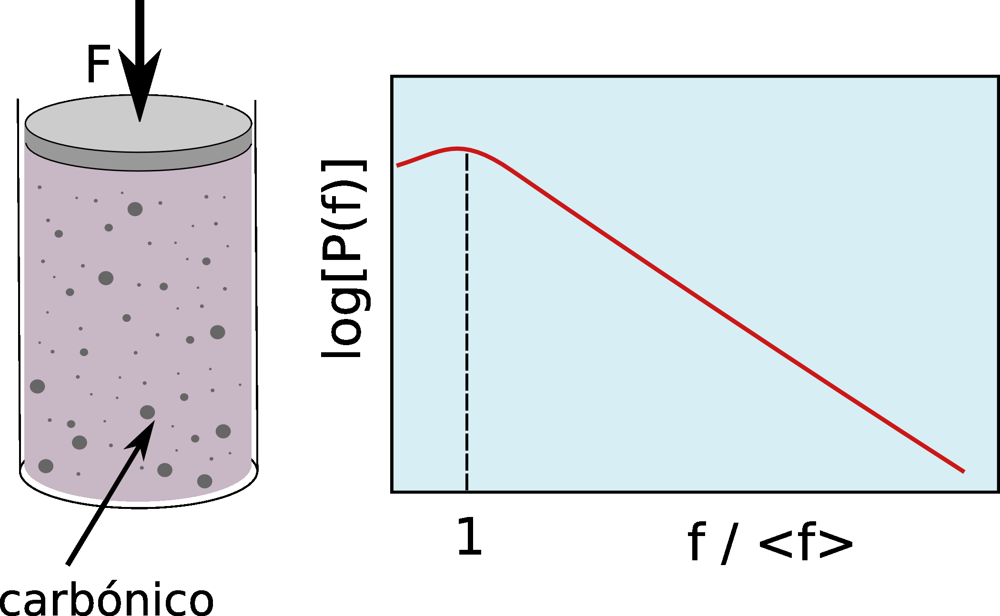
P. Evesque, Poudres & Grains (1999).
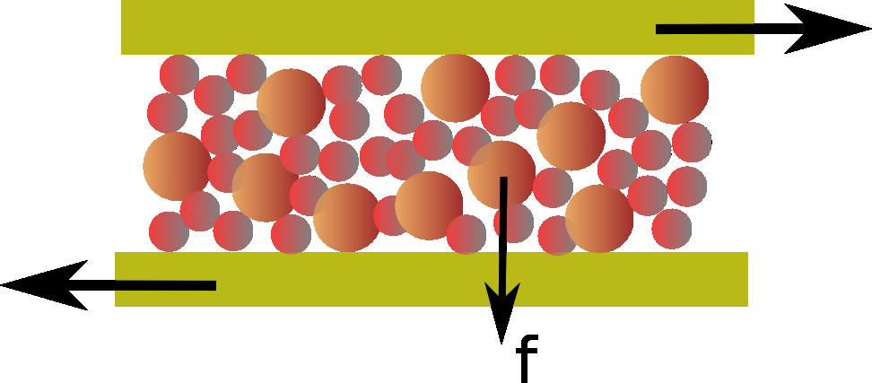
H. Makse, Nature (2002).